Что внутри версии 0.9.11
Все числа посчитаны прямо по коду игры.
Как это выглядит
Снимки прямо из игры. Нажми на картинку, чтобы открыть её крупно.
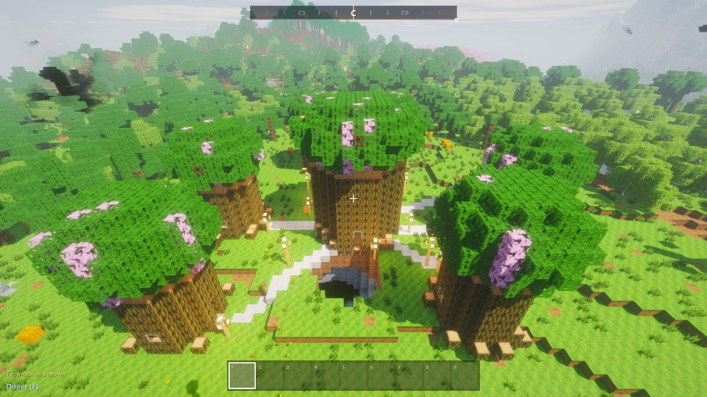
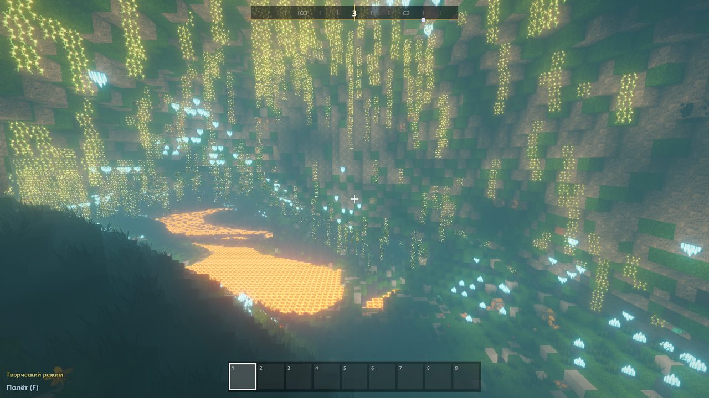
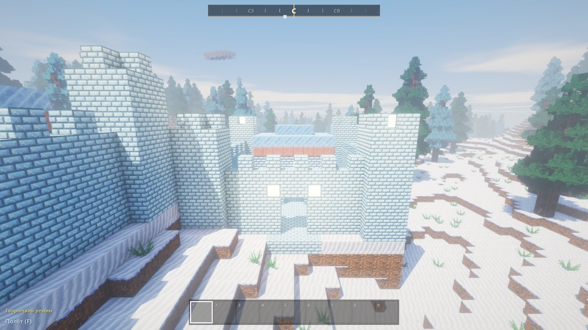
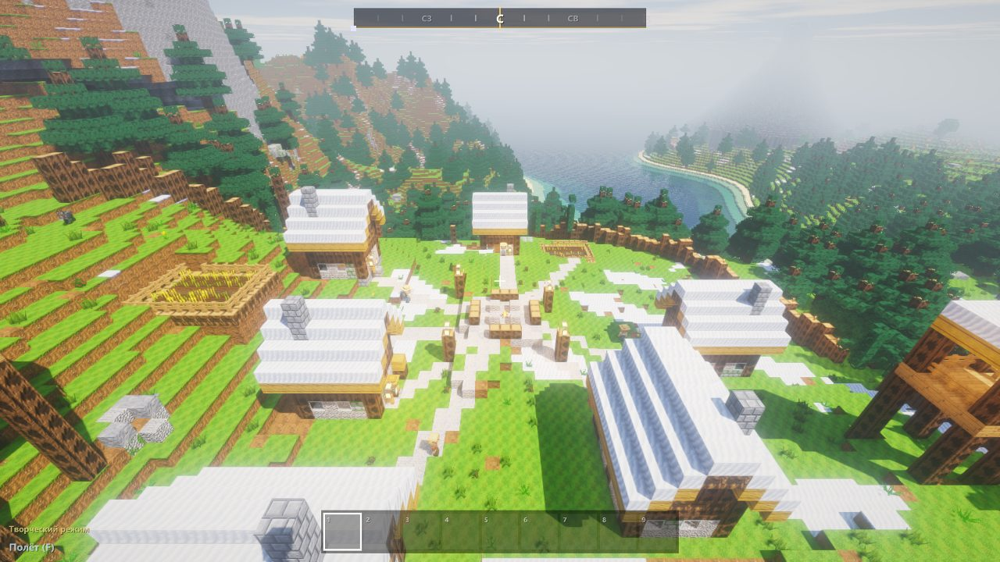
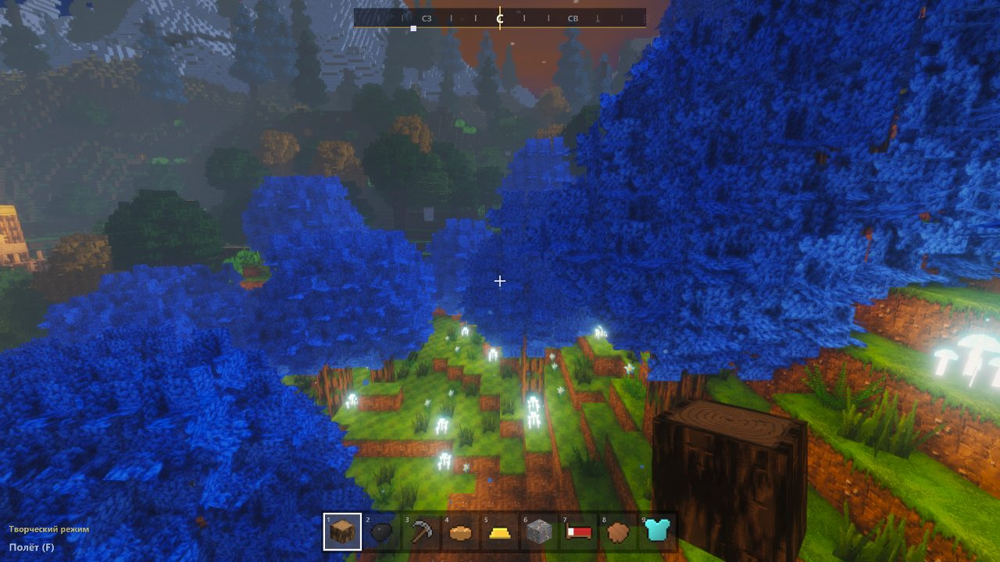
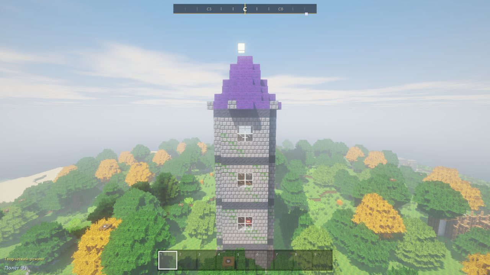
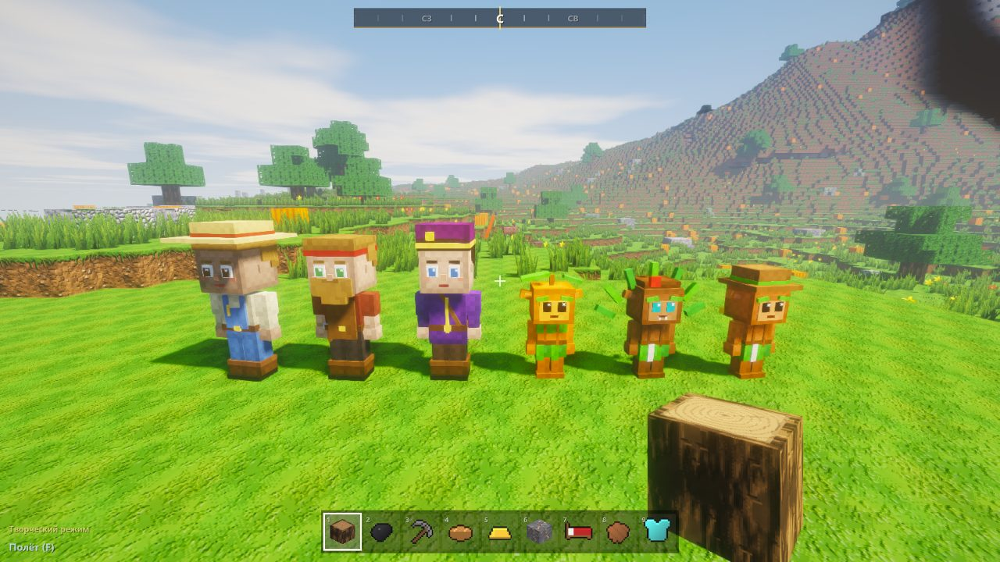
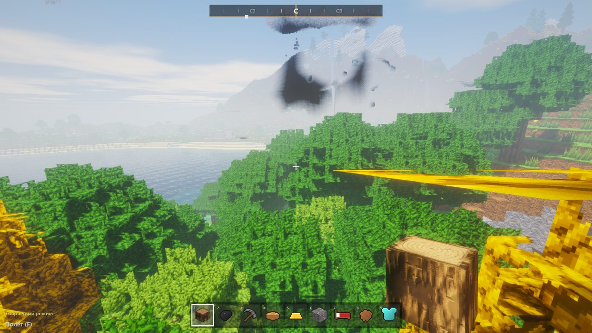
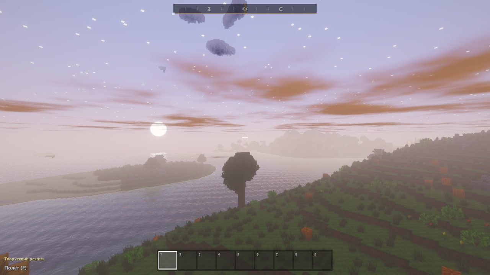
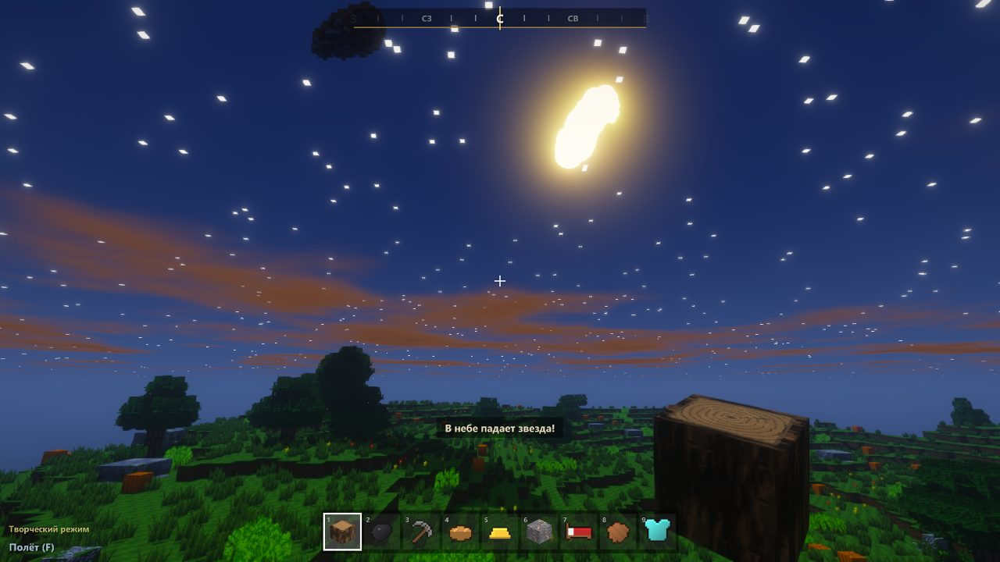
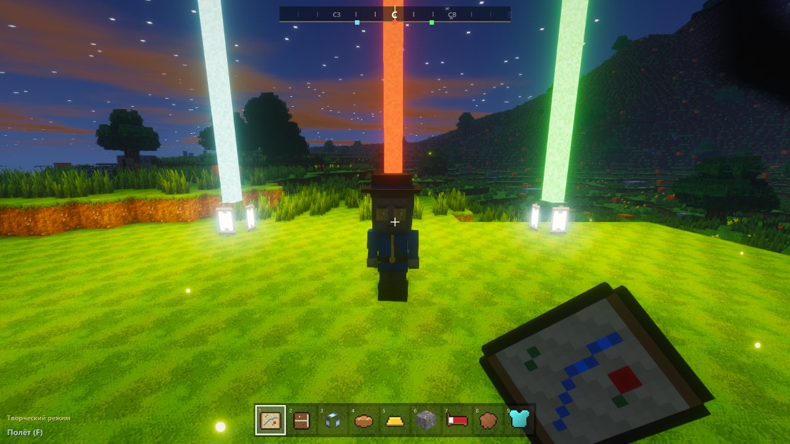
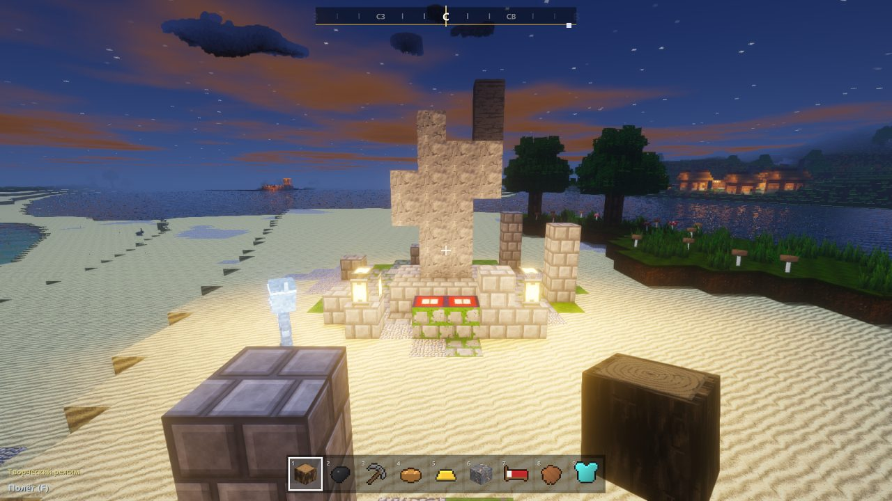
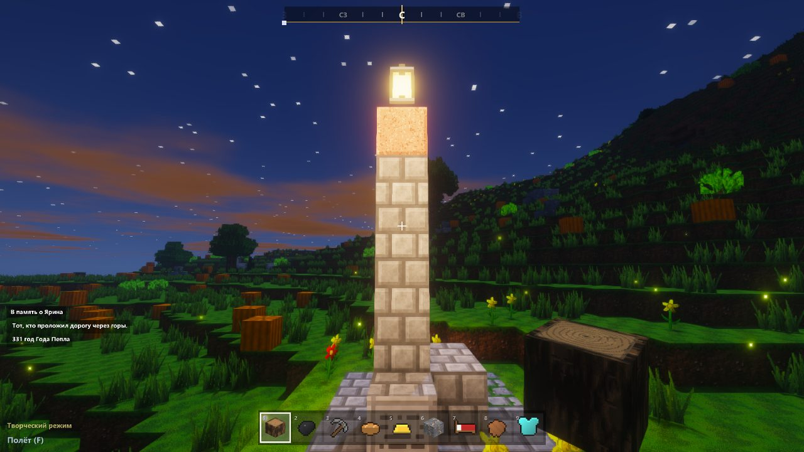
Бесконечный мир, который строится сам
Мир состоит из кусков 16×16 блоков высотой 256 и достраивается по мере путешествия. Новый мир можно настроить: острова, горы или равнины, размер биомов, сколько деревень, уровень моря и время года на старте.
17 биомов
Ещё осенняя и светящаяся листва и вулканы с лавой в кратере.
Пещеры
- Огромные залы, сталактиты и сталагмиты, мох и светящиеся лозы
- Грибные гроты с гигантскими грибами, лавовые озёра, кристаллы
- Объёмные руды: уголь, железо, золото, алмазы, кварц, звёздная руда
- Тёмные и страшные: чёрный туман и шорохи за спиной
Опасная природа
- Трясина и зыбучие пески засасывают, выбраться помогает прыжок
- Гейзеры подбрасывают в воздух
- В горах камнепады, а в пещерах без подпорок обваливается потолок
Погода и небо
- Дождь с лужами, гроза с молниями, снег, туман по биомам
- Радуга, северное сияние, звёздный дождь, затмение каждый 23-й день
- Сезон цветения, «Великий мороз», золотая осень, праздники
- Весной урожай растёт быстрее, зимой почти стоит
Пять миров
Обычный мир
Деревни, подземелья, вулканы, пещеры.
Глубоко внизу слои глубины, на самом дне Бездна.Пекло
Лава, магма, базальт, крепости на сваях, кровавая луна.
Как попасть: портал. Там жарко.Край
Острова из камня Края, странники и Дракон Края.
Как попасть: портал и Око Края.Сумеречный лес
Вечные сумерки, гидра, сумеречные волки, светлячковые големы.
Как попасть: бросить светящуюся пыльцу в пруд с цветами.Небесный мир
Облака, острова из небесного камня, Грозовая птица и Небесная крепость.
Как попасть: небесный ключ на вершине горы.Кто живёт в мире
У каждого свои звуки и анимации. Мобы реагируют на игрока и на погоду, а после смерти разваливаются на части.
Животные · 13
На лошади можно ездить, волка приручить, кошку подманить рыбой. Мыши и вороны портят урожай.
Монстры · 14
Фантомы прилетают к тому, кто не спал три ночи подряд.
Жители и помощники
- Жители и квибеки торгуют и дают задания
- Наёмника можно нанять в деревне за 5 золотых
- Снеговик из тыквы и двух блоков снега кидает снежки в монстров
- Пугало охраняет грядки от ворон
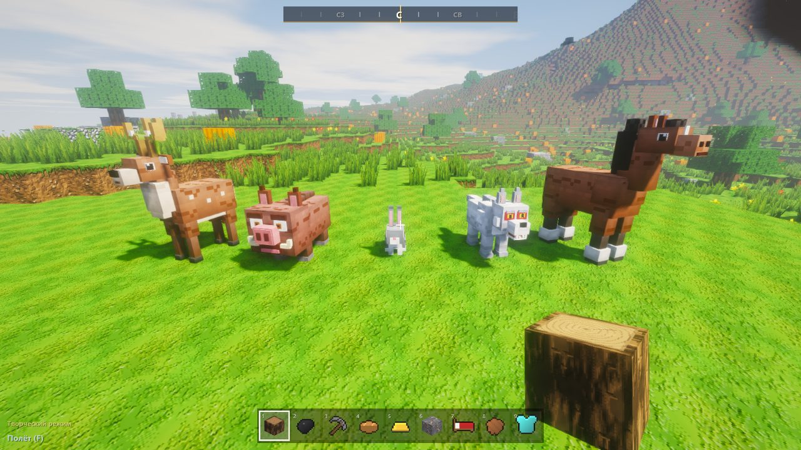
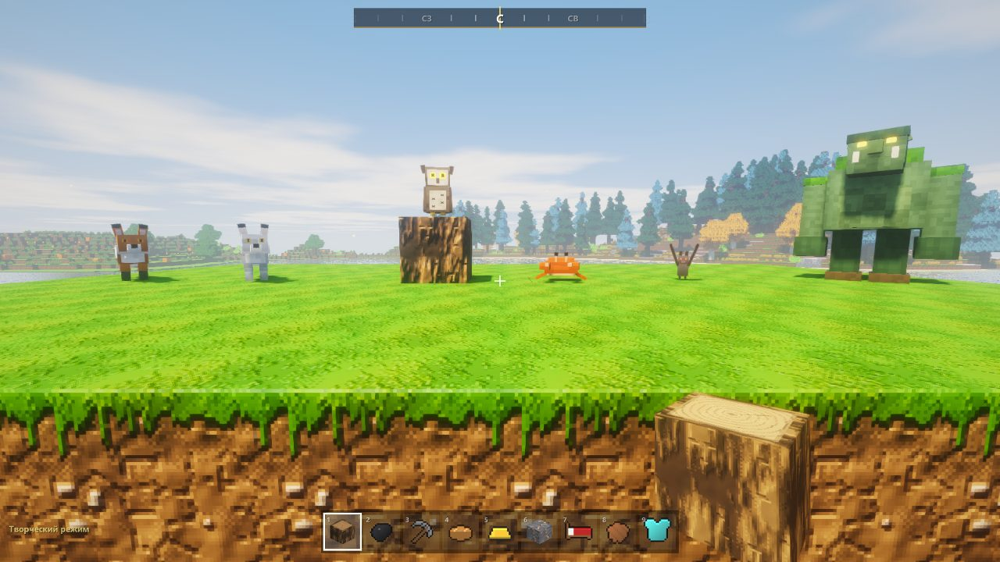
Одиннадцать главных боссов
У каждого своё логово и свой трофей. Финальный босс — Безымянный в Древнем городе.
Дракон Края
Хозяин островов Края.
Повелитель Пламени
Бросает огненные шары.
Древний страж
Просыпается, если открыть сундук святилища.
Лесной страж
Приходит, если срубить слишком много деревьев за полторы минуты.
Сумеречная гидра
Три головы.
Грозовая птица
Летает среди облаков.
Небесный страж
Бьёт молниями и пикирует.
Глубинный наутилус
В воде быстрый и лечится, на сухом полу слабый.
Огненный голем
Огненные шары и кольца пламени. Снежки и вода его ранят.
Теневой двойник
Повторяет движения героя. Свет в руке ранит его сильнее.
Безымянный
Тёмные снаряды, прыжки с места на место, зовёт на помощь тени.
Ещё боссы
- Хозяева подземелий: паучья матка, ледяной владыка, архимаг
- Йети-вожак и Король слизней (его зовёт корона из слизи на болоте)
- Ритуал на алтаре ночью, у четырёх огней: 8 костей — Костяной владыка, 8 тухлятины — Повелитель упырей, 4 меха — Вожак йети, 6 слизи — Король слизней
- Головы боссов вешаются на стену и дают силу
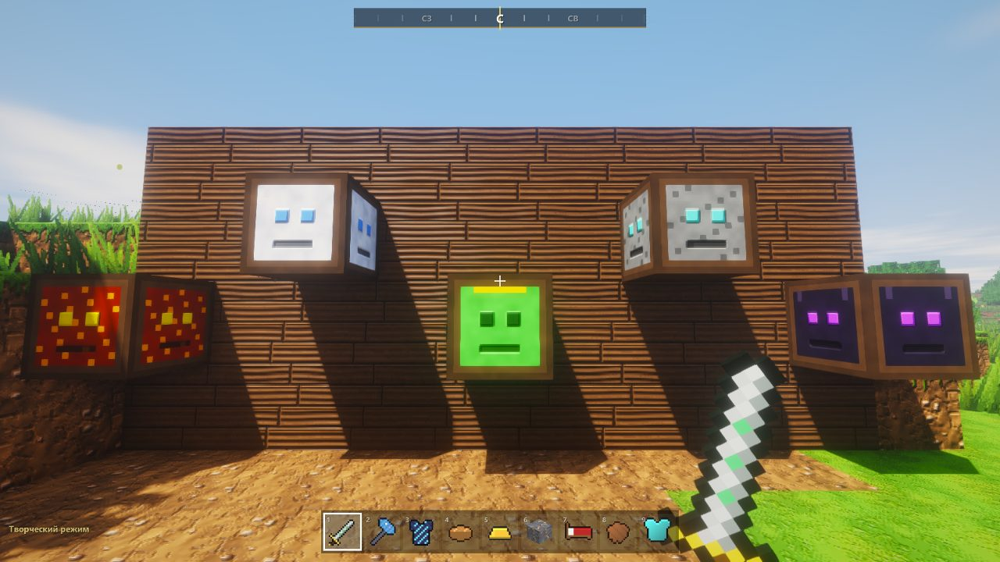
Что можно сделать
Оружие и броня
- Лук, арбалет, копьё, копьё с вымпелом (боевой клич), боевой топор, пламенный меч, звёздный молот, посох архимага, бомбы, динамит
- Щит: удар можно парировать в последний миг
- Броня кожаная, золотая, железная, алмазная, звёздная кольчуга, зеркальная кираса, плащи, которые развеваются
Качество вещей
Выпадает при крафте и в сундуках подземелий. Чем выше звание мастера (от Новичка до Великого мастера), тем чаще выходят хорошие вещи.
Еда, рыбалка, напитки
- Пироги, супы, рагу, уха, сыр, мёд, яичница. Сырое мясо портится, вяленое нет
- Лосось, окунь, золотой карп, иглобрюх, ледяная и светящаяся рыба; сачок, острога, гарпун
- 7 зелий, ягодное вино, травяной чай, зелье удачи, отвар стойкости
Полезное и творчество
- Рюкзак, крюк-кошка, планер, облако в бутылке, подзорная труба, компас друга, воздушный змей
- Картины 16×16 (рисуешь сам), фотоаппарат, книга для записей, бирка для имени вещи
- Моды: текстовые файлы в папке mods добавляют свои рецепты
Строительство
- Плиты, ступени, люки, двери, заборы, рычаги, нажимные плиты, рельсы
- 16 цветов глины, шерсти и стекла. Через витражи свет становится цветным
- Музыкальный блок на 16 нот и радио, которое слышно на 64 блока
- Постройка без опоры обрушивается целиком
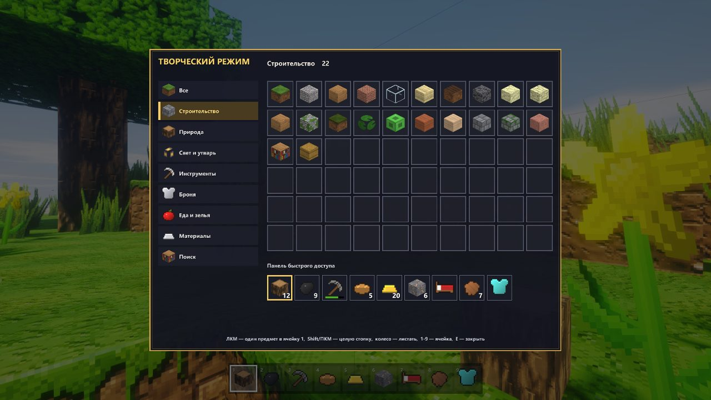
Дерево навыков
Клавиша N. За каждый новый уровень героя — очко навыка; кнопка «Сбросить» возвращает все очки. Ромбики — сколько рангов у навыка.
Воин
Мастер
Путник
Выживание
- Сложность: лёгкая, нормальная, сложная и хардкор с одной жизнью
- Здоровье, сытость, опыт, дыхание и выносливость под прицелом
- Жара в пустыне, разреженный воздух выше 175 блоков, страх полной темноты
- После смерти вещи ждут в могиле, метка видна на карте
Бой
- Удар в голову — критический, по ногам — враг спотыкается
- Удары подряд — комбо до ×5, до +40% к урону
- Уворот на C, щит с парированием
Герой
- Свой облик: кожа, волосы, одежда, глаза
- Руки от первого лица с анимациями и вторая рука (X меняет руки)
- Вид со стороны на F5, обучение для новичков, подсказки на F1
- /replay — призрак героя повторяет последнюю минуту
Вместе по сети
Один открывает мир (Esc), остальные подключаются по IP. Через интернет — общая сеть вроде Radmin VPN. Общие мобы, сундуки, печи, погода и время суток; чат, личные сообщения и голос (держать V).
Что можно вместе
- Обмен предметами, дуэли, бои между игроками, если хозяин разрешил
- Телепорт к другу, отряд с лидером, общие задания и достижения
- Метки «сюда» (G) и «опасно» (H), компас друга
- Друзья видят твои картины и объявления на доске, слышат твоё радио
Новые версии сами
С версии 0.9.10 лаунчер у друзей сам скачивает новую версию с GitHub, проверяет каждый файл и перезапускается. Миры остаются на месте. Если новая версия не запустится, откроется прежняя.
Команды в чате: новый /help
В чате видно 8 строк, поэтому список команд теперь разбит на три раздела. Так они выглядят в игре:
Клавиши
Все клавиши можно поменять: Esc → «Управление».
Все 55 достижений
Зелёное число — сколько опыта даёт достижение.
- Дровосекдобыть бревно2
- Мастерскаясоздать верстак3
- За работу!создать кирку3
- Каменный векдобыть булыжник3
- Горячее делосоздать печь4
- Железный веквыплавить железо6
- Поварприготовить еду в печи4
- Спокойной ночипоспать в кровати4
- В доспехахнадеть броню5
- Алмазы!найти алмаз10
- Меткий стрелоксоздать лук5
- Лучший другприручить волка8
- Наездникприручить лошадь8
- Торговецобменяться с жителем5
- Добрый соседвыполнить задание жителя8
- Фермер-животноводвывести детёныша6
- Рыбакпоймать рыбу4
- Магиязачаровать предмет10
- Расхититель руинсломать спавнер10
- Подрывникподжечь динамит5
- В пекло!попасть в Пекло15
- Укротитель огняпобедить Повелителя Пламени30
- На край светапопасть в Край20
- Драконоборецпобедить Дракона Края50
- Свет в ночизажечь маяк15
- Следопытнайти место по карте картографа15
- Точный блокпарировать удар щитом15
- Дар героямподношение на алтаре15
- Поварприготовить блюдо в котле10
- Первооткрывательоткрыть 10 мест на карте25
- Вместе веселеесыграть с другом15
- Дымовой сигналзажечь сигнальный костёр10
- Плечом к плечупобедить босса с другом40
- Почётный гостьвысшая репутация у фракции30
- Несгибаемыйдожить до 30-го дня в хардкоре60
- Хозяин небапобедить Небесного стража60
- Повелитель стихийсобрать амулет стихий50
- Испытание пройденовыстоять три волны40
- Первые шагипройти обучение20
- Память живапочтить героя у обелиска10
- Звездопадувидеть падающую звезду15
- Пикникустроить пикник10
- Охотник за трофеямиповесить голову босса20
- Странникперенестись между путевыми камнями15
- Мельниксмолоть муку10
- Ничто не пропадаеткостная мука из компостера10
- Покоритель подземелийпобедить хозяина подземелья30
- Дружная работазадание отряда20
- Летописецпрочитать всю историю мира40
- Зельеварсварить напиток8
- Морозоустойчивыйпережить Великий мороз без смертей25
- В вечных сумеркахпопасть в Сумеречный лес20
- Три головы с плечпобедить гидру50
- Выше облаковпопасть в Небесный мир20
- Укротитель грозыпобедить Грозовую птицу50
От 0.8 до 0.9.11
Все версии есть в лаунчере, у старых свои отдельные миры. Самую новую лаунчер сам подписывает «(новая)».
- 0.8Самая первая сохранённая версия игры.
- 0.8.5Исправленные баги, спальный мешок, крюк-кошка, путевые камни.
- 0.9Лаунчер с выбором версий, выход из воды на берег, гнёзда на ветках, лава без дыр.
- 0.9.1Лаунчер в стиле главного меню, VoxelWorld.exe в папке игры.
- 0.9.2Плиты и ступени, люк, красители, цветная глина и шерсть, боевое знамя, варочный стенд, корова и сыр, стрельбище, гонки на лошадях.
- 0.9.3Артефакты и Корона мира, дневник исследователя, Великий мороз, золотая осень, обмен, дуэли и общие мобы по сети.
- 0.9.4Сумеречный лес с гидрой и Небесный мир с Грозовой птицей, новый формат сохранений.
- 0.9.5Пышная листва, объёмные предметы, живые анимации рук, обломки блоков, мобы разваливаются, плащ.
- 0.9.6Руки от первого лица, 168 объёмных моделей, обрушение построек без опоры, сталагмиты, объёмный фонарь.
- 0.9.6.1В главном меню больше не видна рука от первого лица.
- 0.9.7Вторая рука, тёмные страшные пещеры, новые звуки интерфейса, чата, лука и волчий вой.
- 0.9.8Герой нормального роста, точные хитбоксы, звуки с вариантами, эхо в пещерах, шаги по материалам.
- 0.9.9Настройка клавиш, запуск на видеокартах AMD и Intel, съёмка видеоролика.
- 0.9.10Игра сама скачивает новые версии, в лаунчере список версий с описаниями.
- 0.9.11Большое обновление: 5 новых боссов и их места, дерево навыков, выносливость и комбо, качество вещей, могила, порча еды, сложность и хардкор, праздники и наёмники в деревнях, картины, фото и книги, рыбалка, снеговики и кошки, витражи, гейзеры, северное сияние, моды и реплей.
- дальшеУже сделано, но ещё не выложено: /help по разделам, код Main.java разбирается на отдельные файлы.
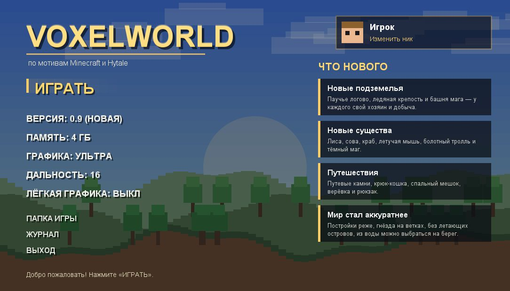
41 108 строк в 102 файлах
Самые большие файлы игры на 9 октября. Main.java всё ещё больше четверти всей игры, поэтому его разбирают по кускам: уже вынесены скачки и стрельбище, съёмка видео, творческий инвентарь и чат-команды.
Остальные 90 файлов вместе — 14 551 строка.
Что можно улучшить
Разобрать Main.java
Дальше на очереди сам чат, потом торговля, дуэли, сообщения и события мира.
Проверить руками
Дерево навыков, рисование картин, книгу и доску объявлений пока проверяли только тесты. Новых боссов стоит проверить в настоящем бою.
Научить /locate
Команда пока не знает подводный храм, вулканическое сердце, Древний город, обсерваторию и Бездну.